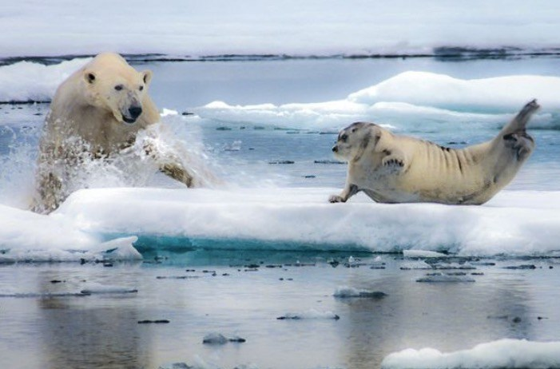

Description
The polar bear, scientifically named Ursus maritimus, is a hypercarnivorous bear which means that more than 70% of its diet is meat. They roam the Arctic Circle mainly around the Arctic Ocean and adjacent land and sea areas. Polar bears are born on land but spend most of their time at sea, therefore they are classified as marine mammals due to the large amount of time they spend at sea. Their scientific name means “maritime bear” and is derived from the fact that they spend so much time at sea.
Due to climate change, polar bears are classified as a vulnerable species. This is because as the temperatures rise due to global warming, more and more of the sea ice they depend as part of their main habitat is melting.
Taxonomy

Polar bears are thought to have diverged from a population of brown bears that became isolated during a period of glaciation in the Pleistocene. The bear family, Ursidae, is thought to have split from other carnivorans about 38 million years ago while the subfamily Ursinae originated approximately 4.2 million years ago. The polar bears mitochondrial DNA diverged from its ancestor the brown bear around 150,000 years ago. Their mtDNA is most closely related to that of a species of extinct Irish brown bears.
The oldest known fossil of a polar bear to help date them is between 110,000 and 130,000 years old. When the polar bear was originally documented, two subspecies were identified: the American polar bear (Ursus maritimus maritimus) by Constantine J. Phipps in 1774, and the Siberian polar bear (Ursus maritimus marinus) by Peter Simon Pallas in 1776. However this distinction has since been invalidated following further research into the species.
Biology
Adult male polar bears (boars) can weigh up to 1,500 pounds, while adult females (sows) only weigh about half that at 550 pounds. They have elongated bodies with a long skull, neck, and nose to help them search holes in the ice for seals. Their very large feet help them to evenly distribute their weight when walking on snow and thin ice and also help them propel when swimming. Polar bears are excellent swimmers and will often swim for days at a time. Their feet also have claws that are deeply scooped which enable them to dig through the ice. A polar bear’s fur consists of a layer of dense underfur and an outer layer of guard hairs, which appear white to tan but are actually transparent. Their bodies are extremely well insulated under their fur thanks to a large amount of adipose tissue. The polar bear has a very well developed sense of smell and also has good vision at long distances however, their hearing is about equal to that of humans. They have 42 teeth with the cheek teeth being smaller and more jagged while the canines are large and sharp.
Ecology
For the most part, polar bears are found mainly in the Arctic Circle and its adjacent landmasses stretching as far south as Newfoundland. They are rare to find North of 88° however, there is evidence that they can range all across the arctic and south into Canada. Occasionally polar bears can drift more widely when searching for sea ice. Polar bears are found primarily along the perimeter of the polar ice pack, rather than in the Polar Basin.
Habitat
The preferred habitat for polar bears is the annual sea ice that covers the waters over the continental shelf and the Arctic inter-island archipelagos. They spend many months out of the year out at sea and frequent areas where the sea ice meets open water because there they can hunt for seals. If the ice in their habitat melts completely in the summer the bears will move to land and wait for the next freeze up. In areas like the Chukchi and Beaufort seas however, they will retreat to areas further north in the summer where the ice stays frozen year round.
Behavior
Unlike their ancestor the brown bear, polar bears are not territorial. When faced with a confrontation, they are actually more likely to retreat than stick around and fight since they are so cautious. The polar bear is a stealth hunter therefore its victims or prey are often unaware of its presence until the attack is already underway.
Adult polar bears typically live solitary lives but can be seen playing together from time to time. Polar bear cubs on the other hand are very playful so it is not uncommon to see them running and play fighting. During mating season the males behaviors change and they become quite violent with fighting as they attempt to find a mate.
Diet
The polar bear is the most carnivorous member of the bear family. Their diet consists mainly of ringed and bearded seals. Once the bear has hunted and killed the seal the adults will mainly eat the skin and blubber of the seal as they are rich in calories and highly digestible, while the younger bears eat the red meat of the seal since it is rich in protein. Males will occasionally attempt to hunt larger prey or eat carcases of walrus, beluga whales, and narwhals. They may also swim underwater and catch fish such as Arctic charr or fourhorn sculpin to eat. Polar bears may attempt to consume almost anything they can find, including hazardous substances.
Reproduction

Mating for polar bears takes place out on the sea ice in April or May. During mating season fights among males for a mate are common and can often result in scaring and broken teeth. In the fall when the ice is at a minimum, the female digs a maternity den in a snowdrift or into the permafrost. They then enter the den an live in a dormant state until they birth their cubs sometime between November and February. The average liter usually consists of two cubs weighing less than 2 pounds. The mother and cubs remain in the den until mid-February or mid-April. They then spend about 12-15 days outside the den but still remain close to it, to give the cubs time to get used to walking and playing. After this the mother and cubs begin the long walk back out to the sea ice so the mother can begin hunting for food again.
Relationship with Humans

Hunting: Polar Bears have long provided mportant raw materials for Arctic peoples, including the Inuit, Yupik, Chukchi, Nenets. However in there are now national regulations on hunting that exist in all countries where polar bears in habit.
Attacks: Satiated polar bears will rarely attack humans unless they are severely provoked. However if a human encounters a polar bear in the wild it is not for certain that they will not attack. This is because if the bear is hungry, they are unpredictable and fearless towards humans, therefore their is always the potential for an attack.
Research: Polar bears may interact with humans when satiated for research and science purposes.
Zoos: Polar bears are often found in captivity at zoos and other places therefore causing them to have to interact with humans in terms of the zookeepers as well as the visitors who are viewing them in their exhibits.